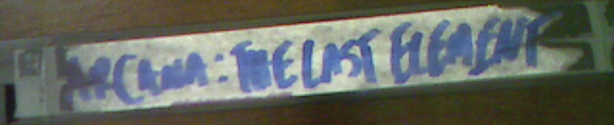

LostTapes.0021
'Umysł Nie Może Odzobaczyć Tego, Co Zobaczył.'

Krowia Fabryka - 2010, 1 godzina 22 minuty
Fikcyjny film o wyobrażonym świecie, w którym ludzie i bydło domowe zamieniają się miejscami, a ludzie są poddawani takiemu samemu traktowaniu jak krowy na farmach przemysłowych i mlecznych. Zakazany ze względu na przepisy o obsceniczności i sprzeciw lobby mięsnego i mleczarskiego

Życie w Mieście Marionetek - 1991, 27 minut
Nigdy nieemitowany pilot programu telewizyjnego dla dzieci o grupie marionetek, które wyruszają na przygody w rzeczywistych lokalizacjach, aby uczyć się o trudnych zawodach. Odrzucony, gdy martwe ciało zostało przypadkowo uchwycone na taśmie, podczas gdy marionetki przeprowadzały wywiad z technikiem utrzymania kanałów ściekowych

Arkana: Ostatni Żywioł - 2018, 2 godziny 2 minuty
Nigdy wcześniej niewidziany, wielomilionowy współczesny film fantasy, który nigdy nie ujrzał światła dziennego po tym, jak część jego byłej obsady z listy A, reżyser i kierownictwo zostali oskarżeni o niezwiązane przestępstwa i wpadli w kontrowersje, wszystkie odniesienia do produkcji tego filmu zostały usunięte. Zdobyty dzięki prywatnym powiązaniom w Hollywood

Puszyste Obiekty - 2016, 52 minuty
Nagranie z kamery przedstawiające grupę studentów rzucających sobie nawzajem coraz trudniejsze wyzwania z zakresu taksydermii. Nadmierna ilość krwi (gore) i niewłaściwe użycie śmiertelnych zastrzyków. Kończy się szczegółową i pouczającą taksydermią na przegranych. Przesłane anonimowo

Ihaa - 1988, 1 godzina 33 minuty
Film z kategorią R o gadającym osiołku, który zakochuje się w ludzkiej kobiecie. Zakazany na wszystkich rynkach z oczywistych powodów

SubSolar - 1999, 1 godzina 47 minut
Film science fiction, który nigdy nie trafił do montażu z powodu katastrofalnego, dziwnego wypadku na planie, w którym prawie wszyscy członkowie obsady i ekipy zginęli w pożarze instalacji elektrycznej. Nagranie pożaru i śmierci można zobaczyć na końcu, zanim nagranie się urywa

Pielęgniarka - 1989, 1 godzina 27 minut
Film oparty na historii prawdziwej osoby zatrudnionej do opieki nad pacjentami w zakładzie dla obłąkanych w Nowej Anglii, która potajemnie się nad nimi znęcała. Film został zakazany, gdy odkryto, że bohaterka filmu nadal żyje i pozwała reżysera o zniesławienie

Apterygial - 2007, 1 godzina 49 minut
Horror o psychopacie, który torturuje ofiary poprzez chirurgiczne usunięcie im strun głosowych, rąk i nóg i trzymanie ich w ogromnym terrarium jak domowe węże. Zakazany ze względu na graficzne przedstawienia operacji bez zgody i nieuzasadnioną przemoc